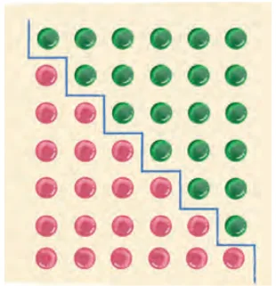

In this section, we derive a simple yet important rule for the sum of the first \(n\) natural numbers. To begin with, can you find the sum of the first ten natural numbers without actually adding all of them?
Let us try a unique approach. Let S denote the sum of the first ten natural numbers. Thus \(\text{S} = 1 + 2 + 3 + 4 + 5 + 6 + 7 + 8 + 9 + 10\). We can also write it as \(\text{S} = 10 + 9 + 8 + 7 + 6 + 5 + 4 + 3 + 2 + 1\). If we place these two equations, one below the other, we notice something interesting.
\(\text{S} = 1 + 2 + 3 + 4 + 5 + 6 + 7 + 8 + 9 + 10\)
\(\text{S} = 10 + 9 + 8 + 7 + 6 + 5 + 4 + 3 + 2 + 1\)
Each pair of corresponding numbers, \(1 + 10,\ 2 + 9,\ 3 + 8,\ \ldots,\ 10 + 1\), in the two equations add up to 11.
Adding the two equations for S, we get
\(2\text{S} = 11 + 11 + 11 + \cdots + 11\) (that is, 11 added 10 times).
This leads to \(2\text{S} = 110\) or \(\text{S} = 55\). The sum of the first 10 natural numbers is indeed 55.
Think and Reflect
Can the same approach be used to find the sum of \(1 + 2 + 3 + \cdots + 100\)?
This method of writing the sum from 1 to any number, reversing the sum and then adding the two expressions can be used to arrive at the formula for the sum of the first \(n\) natural numbers for any value of \(n\).
Let \(\text{S} = 1 + 2 + \cdots + n\).
Then \(\text{S} = n + (n - 1) + \cdots + 1\).
So, \(2\text{S} = n(n + 1)\). We conclude \(\text{S} = \frac{n(n + 1)}{2}\).
We can also think of this argument pictorially.

The diagram in Fig. 8.5 represents the method to find the sum \(1 + 2 + 3 + 4 + 5 + 6\). Note that the figure comprises two sets of circles that represent the sum \(1 + 2 + 3 + 4 + 5 + 6\) above and below of the zigzag partition. The total number of circles forms a \(7 \times 6\) rectangular array.
\(2 \times (1 + 2 + 3 + 4 + 5 + 6) = 7 \times 6\)
Thus, Fig. 8.5 represents the fact \(2 \times (1 + 2 + 3 + 4 + 5 + 6) = 7 \times 6\).
This can similarly be extended to find the sum
\(1 + 2 + 3 + 4 + 5 + 6 + 7 + 8 + 9 + 10\).
Namely, \(2 \times (1 + 2 + 3 + 4 + 5 + 6 + 7 + 8 + 9 + 10) = 10 \times 11\).
In general, \(2 \times (1 + 2 + 3 + 4 + \cdots + n) = n \times (n + 1)\).
Therefore, \(1 + 2 + 3 + 4 + \cdots + n = \frac{n(n + 1)}{2}\).
If we use the notation \(\text{S}_n\) to represent the sum of the first \(n\) natural numbers, then \(\text{S}_n = \frac{n(n + 1)}{2}\).
The first known written mention of this result can be found in Āryabhaṭa’s Āryabhaṭīya, Chapter 2, Verse 19. The verse provides two ways to calculate the sum, with the second part describing that the sum can be calculated by taking the sum of the first and last terms, divided by two (the average), and multiplied by the number of terms.
Think and Reflect
Can you use this formula to find \(\text{S}_{20}\), \(\text{S}_{50}\) or \(\text{S}_{1000}\)?
Also, this formula can be used to find the sum of consecutive numbers such as \(25 + 26 + 27 + \cdots + 58\).
Note that \(25 + 26 + 27 + \cdots + 58 = (1 + 2 + 3 + \cdots + 58) - (1 + 2 + 3 + \cdots + 24)\)
\(= \text{S}_{58} - \text{S}_{24} = \frac{58 \times 59}{2} - \frac{24 \times 25}{2} = 29 \times 59 - 12 \times 25 = 1711 - 300 = 1411\).
Think and Reflect
Let us revisit the sequence \(t_n\) of triangular numbers 1, 3, 6, 10, 15, … shown in Fig. 8.1. Note that the \(n^{th}\) term of this sequence is the sum of the first \(n\) natural numbers. Thus \(t_n = \frac{n(n + 1)}{2}\).
Can you use this to find the \(10^{\text{th}}\), \(17^{\text{th}}\) and \(80^{\text{th}}\) triangular numbers?